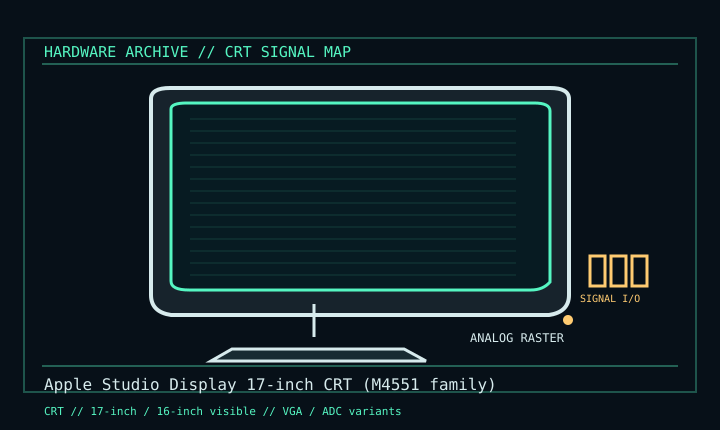

[ INDIVIDUAL COMPONENT // DISPLAYS ]
Apple Studio Display 17-inch CRT (M4551 family)
Apple desktop CRT, 17-inch tube / 16-inch viewable, late 1990s. CRT

IDENTIFICATION: Verify the complete model/revision on the rear label. Specifications are tied to the cited manual/specification; variant-dependent values are qualified rather than generalized.
Specifications
| Catalog subcategory | Crt Displays |
|---|---|
| Exact product/family | Apple Studio Display 17-inch CRT (M4551 family) |
| Era | Apple desktop CRT, 17-inch tube / 16-inch viewable, late 1990s. |
| Tube / image | 17-inch CRT, 16-inch viewable; 0.25 mm aperture grille; supported modes include 1600 × 1200 at 60 Hz on ADC generation. |
| Signal / inputs | Analog RGB; VGA-connector and ADC versions exist. ADC combines video, USB and power; it is not DVI. |
| Power / mechanics | Desktop CRT; power arrangement and connector differ across VGA and ADC releases. Glass face and heavy cabinet. |
| Modes / refresh | Mode and refresh combinations vary with exact connector generation; Apple technical specifications are model-specific. |
Revision, signal & host compatibility
Confirm exact model and rear connector. ADC requires an ADC-capable Mac or the appropriate active conversion/power path; a passive adapter cannot turn ADC into DVI/VGA. Do not transfer one generation’s mode table to a different Studio Display.
Match source signal type, sync/timing, connector pinout, bandwidth and power path to this exact display. Physical connector fit alone does not establish electrical or timing compatibility.
Preservation & repair notes
Record connector, model, geometry and focus. Keep original cable and power path. CRT circuitry and tube can retain hazardous voltage; use Apple service documentation and qualified repair.
Record model suffix, serial/date label, accessories, image condition, configuration, source document and repair history. CRT high-voltage, LCD backlight and OLED panel risks require appropriate service training and the correct manual.
Manufacturer manuals & references
- Apple Studio Display (17-inch CRT, 16-inch VIS) technical specificationsManufacturer technical specifications and model/mode distinction.
- Apple Studio Display 17 service documentation scanService and handling reference.